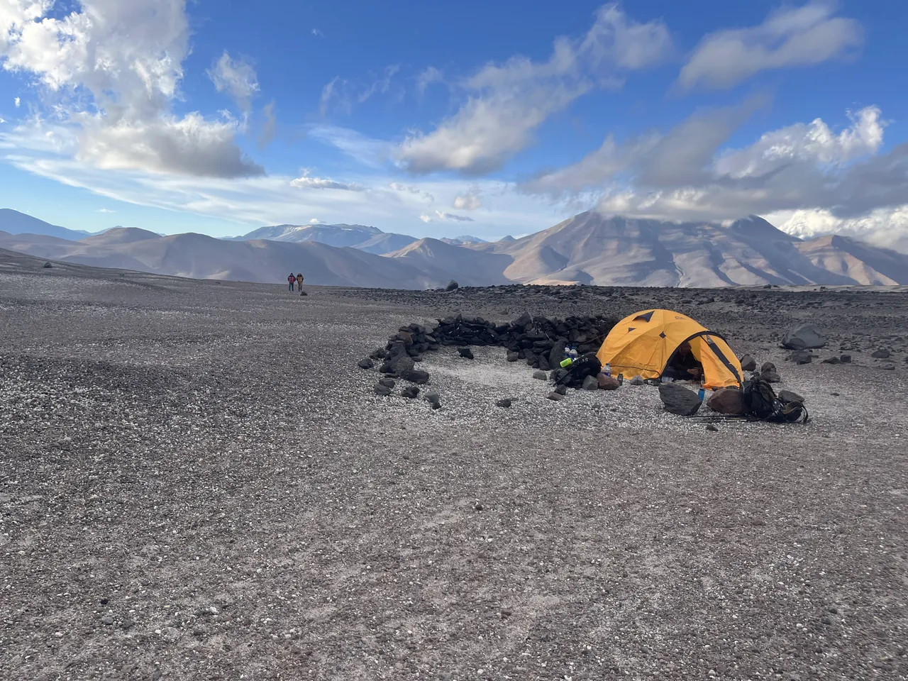

Expedición
Expediciones y ascensos de altura en los Andes
Encontrá expediciones al Cerro Vallecitos, Volcán Maipo, El Sosneado y Risco Plateado en Mendoza, al Volcán Bertrand en Catamarca y a las cumbres de Tuzgle y Chañí en Jujuy. Cada ficha detalla el programa y las jornadas de aclimatación.